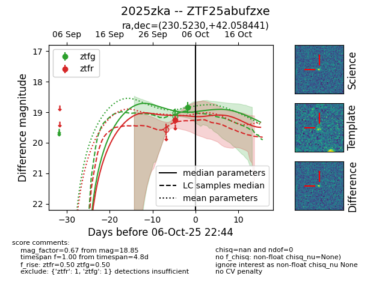
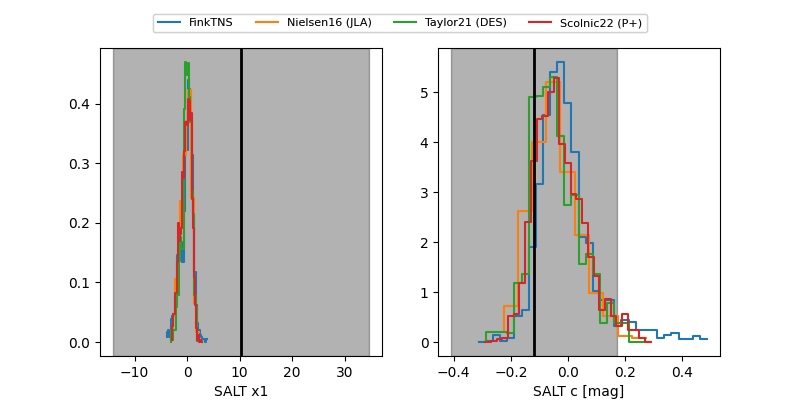

FINK: ZTF25abufzxe
Lasair: ZTF25abufzxe
ALeRCE: ZTF25abufzxe
TNS: 2025zka
YSE: 2025zka
ZTF25abufzxe (ztf,fink)
2025zka (tns,yse)
equatorial (ra, dec) = (230.5230,+42.05844)
galactic (l, b) = (68.8150,+55.94926)


last ztfg=18.85, ztfr=19.25
1 ztfg, 1 ztfr detections